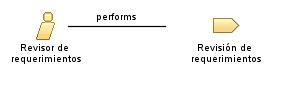

| Role: Revisor de requerimientos |
 |
|
Relationships
 |
||
| Primary Performs | ||
|---|---|---|
| Modifies |
|
|
| Process Usage | ||
Staffing
| Skills | Una persona que actua como revisor de requisitos tiene algunos conocimientos escenciales del dominio empresarial o tecnológico. Otro requisito de habilidad que poseen es el conocimento detallado de las técnicas de facilitación y modelado aplicadas |
|---|